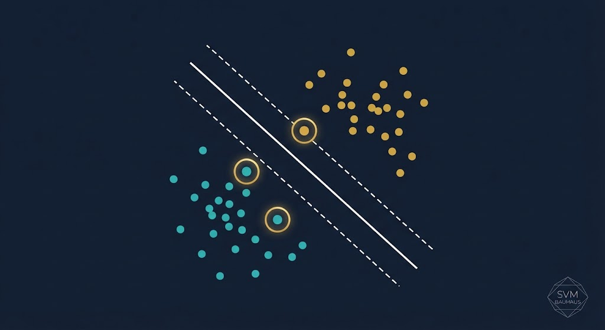
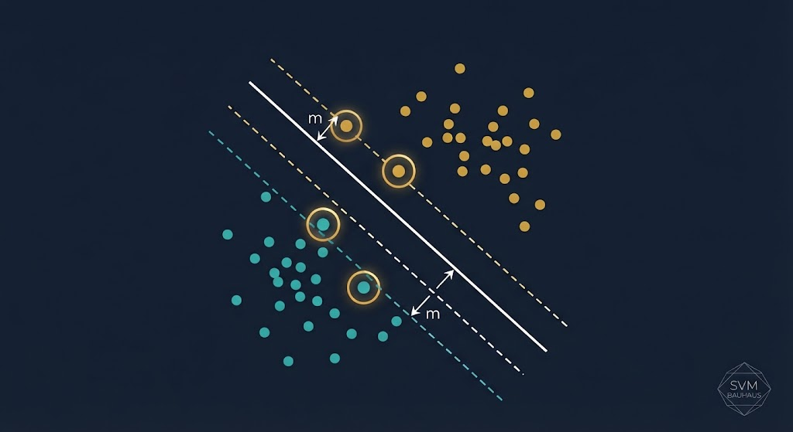
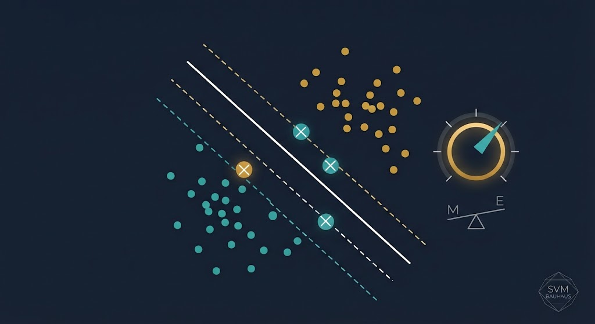
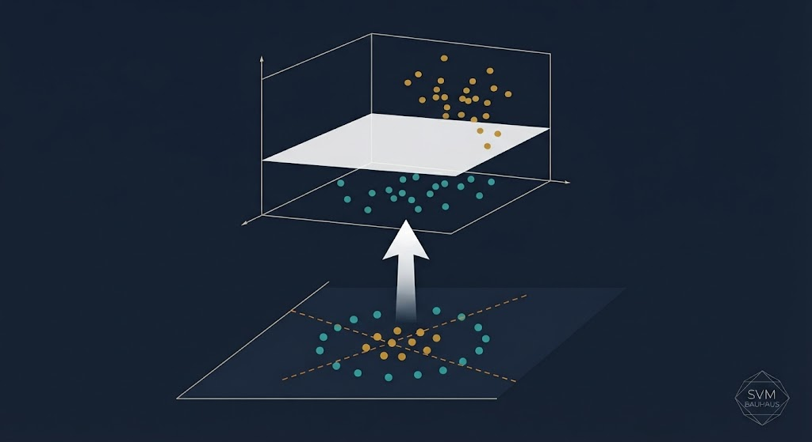
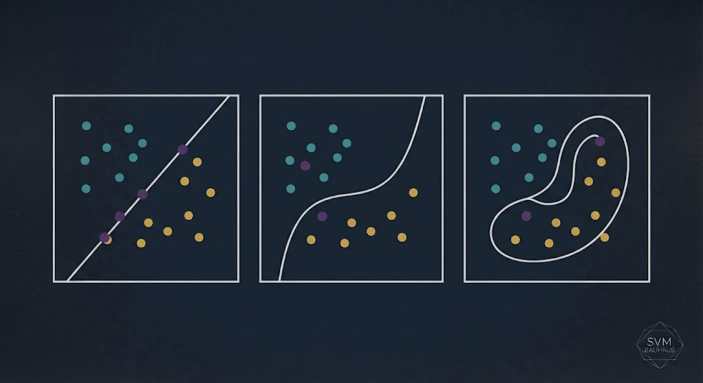
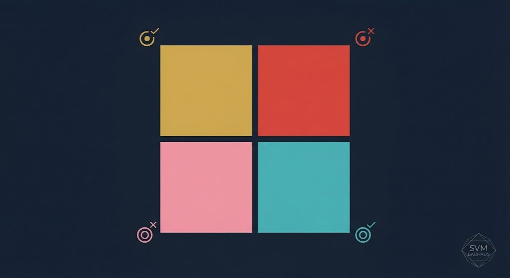
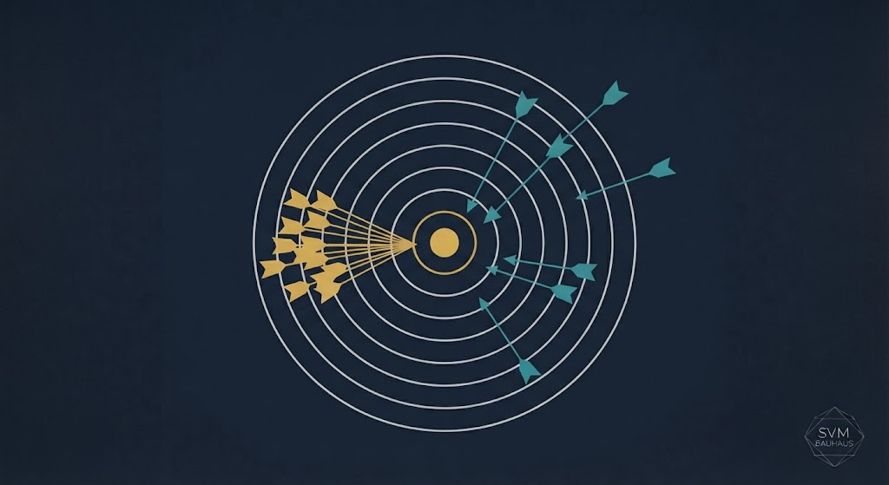
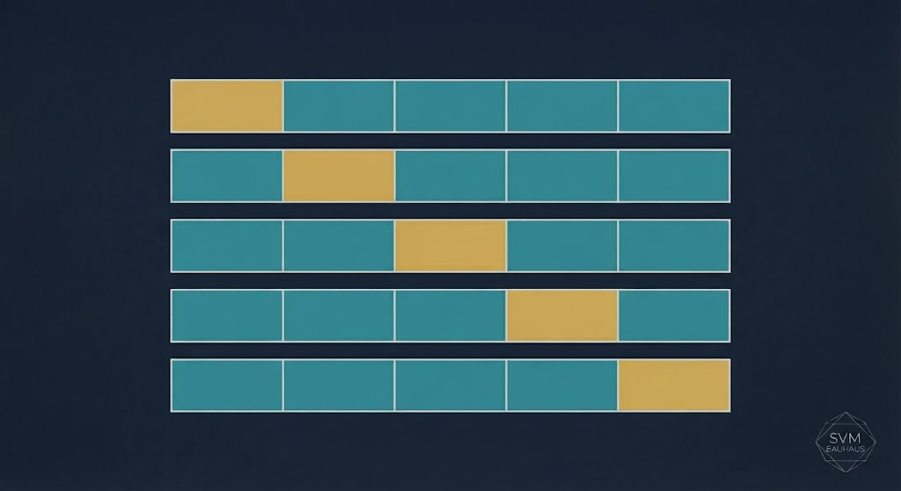
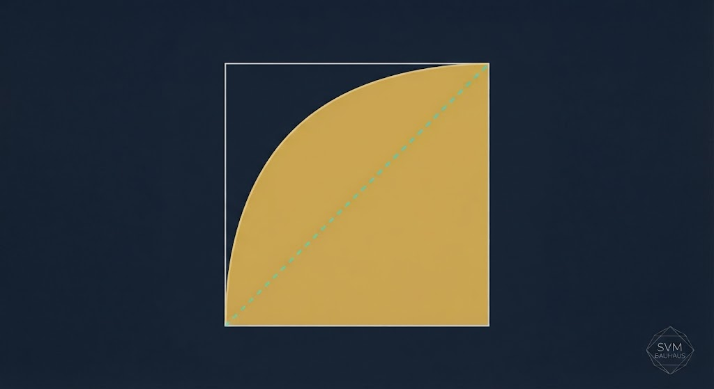

جلسه ۸ — SVM و ارزیابی
جلسه ۸ — SVM و ارزیابی
جلسه ۸ — SVM و ارزیابی
جلسه ۸ — SVM و ارزیابی
Support Vector Machines · Model Evaluation
From Maximum Margin to Confusion Matrix
ANOVA، Taguchi، S/N Ratio
SVM، ارزیابی، ROC
✅ SVM — Maximum Margin
✅ Support Vectors
✅ Soft Margin و پارامتر C
✅ Kernel Trick
✅ Confusion Matrix، Precision، Recall
✅ Cross-Validation، ROC، AUC
Support Vector Machine یکی از زیباترین الگوریتمهای یادگیری ماشین است — با یک ایده هندسی ساده: بهترین مرز، مرزی است که بیشترین فاصله را از هر دو کلاس داشته باشد. این «بهترین مرز» را Maximum Margin مینامیم.
SVM در مسائل با ابعاد بالا (مثل پردازش متن، تشخیص تصویر) عملکرد بسیار خوبی دارد و از زمان معرفی (۱۹۹۵) تاکنون یکی از پرکاربردترین الگوریتمها در صنعت و پژوهش است.
بهترین مرز = بیشترین فاصله
تنها چند نقطه، مرز را تعیین میکنند
جستوجو در فضای با ابعاد بالاتر
چگونه بفهمیم مدل خوب است؟
فرض کنید دادههای دو کلاس روی صفحه پراکندهاند. بینهایت خط میتواند آنها را جدا کند. SVM میگوید: بهترین خط، خطی است که بیشترین فاصله را از نزدیکترین نقطههای هر دو کلاس داشته باشد.

$\mathbf{w}^T \mathbf{x} + b = 0$
فاصله بین دو خط موازی = $2/||\mathbf{w}||$
شیب خط مرز را تغییر دهید و ببینید چطور حاشیه تغییر میکند.
در SVM، تنها نزدیکترین نقاط به مرز تصمیم اهمیت دارند. این نقاط را «بردارهای پشتیبان» مینامیم. اگر بقیه نقاط را حذف کنیم، مرز تغییر نمیکند — این ویژگی، SVM را فوقالعاده کارآمد میکند.

معمولاً کمتر از ۵٪ داده، Support Vector است
SVM به بقیه دادهها حساس نیست — مقاوم به نویز
$\alpha_i > 0$ فقط برای Support Vectors
در داده واقعی، همیشه نویز یا همپوشانی وجود دارد. SVM با Soft Margin اجازه میدهد چند نقطه از حاشیه عبور کنند، اما جریمهشان را با پارامتر C اعمال میکند.

حاشیه پهن — مدل سادهتر، ریسک Underfitting
حاشیه باریک — مدل پیچیدهتر، ریسک Overfitting
C را تغییر دهید و ببینید حاشیه و دقت چطور تغییر میکند.
وقتی داده در فضای ۲بعدی خطی جدا نمیشود، میتوانیم آن را به فضای با ابعاد بالاتر ببریم که خطی جدا میشود — بدون محاسبه صریح آن فضا. این «جادوی کرنل» است.


| کرنل | فرمول | کاربرد |
|---|---|---|
| Linear | $K = \mathbf{x}_i^T \mathbf{x}_j$ | دادههای خطی |
| Polynomial | $K = (\gamma \mathbf{x}_i^T \mathbf{x}_j + r)^d$ | مرزهای منحنی ساده |
| RBF (Gaussian) | $K = \exp(-\gamma ||\mathbf{x}_i - \mathbf{x}_j||^2)$ | معمولترین — همه کاره |
| Sigmoid | $K = \tanh(\gamma \mathbf{x}_i^T \mathbf{x}_j + r)$ | شبکه عصبی |
یک مدل با دقت ۹۰٪ لزوماً خوب نیست. باید بدانیم:
مدل عیب را درست تشخیص داد
مدل سالم را درست تشخیص داد
مدل سالم را عیب تشخیص داد — هشدار کاذب
مدل عیب را سالم تشخیص داد — خطرناک!

| پیشبینی مثبت | پیشبینی منفی | |
|---|---|---|
| واقعی مثبت | TP | FN |
| واقعی منفی | FP | TN |

ماتریس درهمریختگی را تغییر دهید و معیارها را ببینید.
به جای یک بار تقسیم داده به train/test، داده را به k بخش میکنیم. هر بار یک بخش را برای تست و بقیه را برای آموزش استفاده میکنیم.

تخمین واقعبینانهتر از دقت مدل
5 یا 10
k برابر آموزش — کندتر اما دقیقتر
منحنی ROC نشان میدهد با تغییر آستانه تصمیم، TPR (Recall) نسبت به FPR چطور تغییر میکند. AUC مساحت زیر این منحنی است — هرچه نزدیک ۱ بهتر.

مدل کامل — غیرواقعی
تصادفی — بیارزش
مدل خوب
% SVM دودویی X = [randn(100,2); randn(100,2) + 3]; y = [ones(100,1); -ones(100,1)]; svmModel = fitcsvm(X, y, 'KernelFunction', 'rbf', 'BoxConstraint', 1); pred = predict(svmModel, X); % Confusion Matrix cm = confusionmat(y, pred); disp(cm); % Precision، Recall، F1 TP = cm(1,1); FP = cm(2,1); FN = cm(1,2); TN = cm(2,2); prec = TP / (TP + FP); rec = TP / (TP + FN); f1 = 2 * prec * rec / (prec + rec); fprintf('Precision: %.2f, Recall: %.2f, F1: %.2f\n', prec, rec, f1); % Cross-Validation cvModel = crossval('svm', X, y, 'KFold', 5);
import numpy as np from sklearn.svm import SVC from sklearn.model_selection import train_test_split, cross_val_score from sklearn.metrics import confusion_matrix, precision_score, recall_score, f1_score, roc_auc_score np.random.seed(42) X = np.vstack([np.random.randn(100, 2), np.random.randn(100, 2) + 3]) y = np.array([0]*100 + [1]*100) X_train, X_test, y_train, y_test = train_test_split(X, y, test_size=0.3) model = SVC(kernel='rbf', C=1.0) model.fit(X_train, y_train) pred = model.predict(X_test) cm = confusion_matrix(y_test, pred) print(f"Confusion Matrix:\n{cm}") prec = precision_score(y_test, pred) rec = recall_score(y_test, pred) f1 = f1_score(y_test, pred) print(f"Precision: {prec:.2f}, Recall: {rec:.2f}, F1: {f1:.2f}") # Cross-validation scores = cross_val_score(SVC(kernel='rbf'), X, y, cv=5) print(f"CV Accuracy: {scores.mean():.3f} ± {scores.std():.3f}")
[AI] HW08 - نام - شماره دانشجویی به arcslab.uth@gmail.com
برای جستوجوی مقالات و مراجع درباره SVM و ارزیابی مدل.
جستوجوی علمی با ذکر منابع
جلسه ۸ — اصلیتحلیل کد و مقالات
پشتیبانکدنویسی SVM و ارزیابی
پیشنهادیدر Perplexity جستوجو کنید: «SVM fault diagnosis mechanical 2024» و ۳ مقاله معتبر پیدا کنید. منابع را در HW08 بنویسید.
Maximum Margin — بهترین مرز با بیشترین فاصله
تنها نقاط نزدیک به مرز اهمیت دارند
Linear، Poly، RBF — جادوی ابعاد بالا
TP، TN، FP، FN — پایه ارزیابی
معیارهای تکمیلی Accuracy
اعتبارسنجی متقابل و AUC
Next Session: Introduction to Deep Learning
• Neural Networks — شبکه عصبی
• Perceptron و MLP
• Backpropagation
• Activation Functions
• Keras و PyTorch